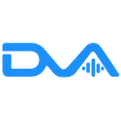

안녕하세요, 현승준입니다. 주어진 문제 그 너머를 바라봅니다.
전화로 배송을 접수하는 일부터 영상 합성·스크린샷 검색까지,
AI가 일상과 업무에서 쓰이는 시스템을 만듭니다.
프로젝트

DVA
전화로 택배를 접수하는
AI 상담원
디지털 물류·퀵서비스 플랫폼 '디버(Dver)'와의 기업 연계 프로젝트입니다. 실시간 음성 모델이 고객과 자연스럽게 통화하고, 별도의 의도 판단 API와 업무 도구가 접수 의도·주소·주문 정보를 검증합니다.
담당 AI 코어 아키텍처 · 음성 에이전트 서버 및 배포 인프라
- FastAPI
- gpt-live-1
- Decision API
- LangGraph
- SQLite FTS5
- Jenkins
전화 상담을 검증 가능한 주문으로
AI 코어 아키텍처와 음성 서버·배포 인프라를 단독 주도했습니다. 고객이 접수 순서를 바꾸거나 중간에 질문해도 통화를 자연스럽게 이어가면서, 실제 주문 접수·취소는 서버 이중 확인을 거쳐 실행하도록 설계했습니다. 팀원이 담당한 FAQ·RAG와 확장 기능은 제외하고 본인 기여 범위만 정리했습니다.
- 의도 판별 지연 (P50)
- 1.3초 → 0.25초80% 단축 · 웜 호출 251ms
- 실통화 판별 토큰
- 40만 → 3.7천~99% 절감 · 리플레이 1/27
- 지번 로컬 조회 (P50)
- 392ms → 7.7ms약 50배 단축 · 642만 건물 DB
음성 응대와 업무 판단의 경계
통화 흐름은 음성 모델이 맡고, 상태 검증과 주문 실행은 서버의 이중 확인(Two-Key) 게이트가 통제합니다.
의도 판별 토큰과 응답 지연 개선
동일 로그 재생(57발화) 입력 토큰
- 기존 · 전사 조각마다 세션 트리거56.4만
- 개선 · 발화 종료 후 독립 호출2.1만
의도 판별 응답 지연 (중앙값 P50)
- 기존 · responses.create 분류1,300ms
- 개선 · 독립 Decision API250ms
실통화 기준 토큰은 40만 → 3.4~3.7천(~99% 절감), 웜업 이후 독립 API 단독 호출(53회) 지연은 중앙값 251ms·P95 284ms였습니다.
고정 질문 흐름에서 발화별 이중 확인으로
- 문제
- 42노드 LangGraph 고정 흐름은 고객이 순서를 바꾸거나 중간에 요금을 물으면 대화가 막혔고, 음성 모델에 전권을 주면 미기록 주문을 완료했다고 답할 위험이 있었습니다.
- 해결
- 통화 진행은
gpt-live-1에 맡기고, 발화 종료 시 서버가 독립 Decision API로 의도를 판별하도록 역할을 반전했습니다. 주문 접수·취소는 음성 모델과 판단 API의 이중 확인(Two-Key)이 5초 안에 일치해야 실행됩니다. - 결과
- 백엔드 위임 생성 ~9초 → 0.5~0.9초, 불필요한 상태 조회 4/10 → 0/10 감소.
전국 642만 건물 데이터 기반 전화 주소 복원
- 문제
- 전화 음질(G.711)에서 도로명·지번 오인식이 잦았고, 전국 70만 건물명 FTS5 Trigram(3글자 색인)을 도입하자 기존 주소 조회 P95가 100ms에서 525ms로 악화했습니다.
- 해결
- 행정안전부 건물 주소 데이터 약 642만 건을 로컬 SQLite로 구성하고 희소한 Trigram만 선별 조회했습니다. 로컬 복원과 카카오 검색을 병렬 실행해 도로명 음운 일치로 교차 검증하고, 우편번호·지번은 로컬에서 직접 조회했습니다.
- 결과
- 지번 조회 중앙값 392ms → 7.7ms(약 50배), 지역 생략·건물명 평가셋(v2) 1/55 → 54/55(오답 0건), 기본 평가셋(v1) 106/106.
실통화 32초 침묵·인사 잘림 및 레이스 해결
- 문제
- 택배 확정 직후 32초간 침묵하거나 마무리 인사 도중 전화가 끊겼고, 운영 276통화 감사에서 정규식 문구 검사 오탐 26건이 확인되었습니다.
- 해결
- 무음 구간에도 이어지는 오디오 델타 대신 텍스트 전사(
output_transcript.delta) 기준으로 발화 종료를 감지하고, 도구 실행이 판단 반영을 기다리는 동기화 게이트(Runtime.deciding)를 도입했습니다. 정규식 검사를 폐기하고 백엔드READY응답으로 완료를 확정했습니다. - 결과
- 32초 침묵·인사 잘림 및 정규식 오탐 0건 재발, 자동화 테스트 75개 → 936개 구축.
장애 재전송(Outbox), 기동 분리 및 관제
- 문제
- 유휴 자동 중지된 외부 GPU 서버를 기동 경로에서 동기 검증하다 운영 컨테이너가 35회 연속 재시작했고, 통화 종료 시 백엔드 타임아웃으로 주문이 유실될 위험이 있었습니다.
- 해결
- 기동 경로에서 GPU 의존성을 제거하고, 전송 결과가 불명확한 주문은 통화별 멱등성 키와 SQLite Outbox(재전송 대기 테이블)에 저장해 60초 주기로 재전송했습니다. 14개 구간 지연을 SSE(서버 푸시)
/monitor로 중계하고 Jenkins에 배포 잠금과 자동 롤백을 넣었습니다. - 결과
- GPU 오프라인 기동 실패 35회 → 0회, Stage 2 통화 등록 연쇄 유실 차단.
MOTIF
촬영한 인물을 다른 배경에
합성하는 영상 AI
서로 다른 공간에서 촬영한 아티스트와 팬의 영상을 자연스럽게 합성합니다. 영상 객체 분할·제거 PoC 검증부터 온디맨드 GPU 서빙 연동과 파이프라인 병목 최적화까지 맡았습니다.
담당 영상 AI 파이프라인 · 온디맨드 GPU 서빙 · 백엔드 연동
- GCP Cloud Run Job
- SAM 2.1
- SVOR
- RelightVid
- AWS S3
- FastAPI
수상 SSAFY 15기 특화 프로젝트 최우수상
영상 합성을 요청마다 처리하는 GPU 서비스로
팬이 한 번 촬영한 춤 영상을 아티스트 영상에 합성하는 플랫폼입니다. 브라우저 객체 분리·제거 PoC 구축, AWS EC2–GCP Cloud Run Job 온디맨드 GPU 서빙 연동, 가중치 로딩·프레임 병렬화 최적화를 주도했습니다.
- SVOR 가중치 로딩
- 29.3분 → 1.9분93.5% 단축 · SVOR 44분 → 13분
- 프레임 보정 병렬화
- 123.9초 → 12.2초10.2배 단축 · PNG 180장 일치
- PoC 원본 화질 보존
- PSNR = ∞마스크 외부 100% 보존 · ±71ms
사전 계산과 요청 시 합성 분리
무거운 아티스트 영상 분석을 사전에 1회 계산해 두고, 팬 요청 시에만 온디맨드 GPU Job을 실행해 유휴 비용을 없앴습니다.
GPU 파이프라인 병목 최적화
SVOR Transformer 가중치 로딩 (Cloud Run Job)
- 기존 · 랜덤 접근 로딩29.3분
- 개선 · 순차 읽기 패치(seq_load)1.9분
프레임 보정 시간 (90프레임 시험 영상)
- 기존 · 단일 스레드 직렬 처리123.9초
- 개선 · 멀티 워커 병렬화12.2초
빌드 45회·Job 실행 37회 프로파일링 결과입니다. SVOR 전체 단계는 약 44분 → 13분, 별도 전체 합성 비교는 동일 입력 기준 38.69분 → 25.81분으로 줄었습니다.
60분 제한을 넘기던 2인 영상 합성 완주
- 문제
- Cloud Run Job의 최대 실행 시간은 60분인데, 비디오 인페인팅(SVOR) 단계만 44.2분이 걸려 2인 영상 합성 작업이 반복 타임아웃으로 실패했습니다.
- 해결
- 단계별 소요 시간을 직접 프로파일링해 추론(3.55분)이 아니라 Transformer 가중치 로딩(29.3분)이 핵심 병목임을 확인했습니다. 상위 GPU 교체 대신 가중치를 순차적으로 읽어 메모리에 올리는 패치(
seq_load.py)를 적용했습니다. - 결과
- 가중치 로딩 29.3분 → 1.9분(93.5% 단축), SVOR 단계 44분 → 13분, 2인 영상 합성 49분 40초 완주.
프레임 병렬화와 바이트 단위 동일성 검증
- 문제
- 광학 흐름(Farneback) 기반 프레임 보정이 단일 스레드로 실행되어 21개 vCPU 중 대부분이 유휴 상태였고, 병렬 전환 시 출력 프레임이 미세하게 달라질 위험이 있었습니다.
- 해결
- 프레임 보정을 멀티 워커 병렬 구조로 전환하고, 기존 직렬 경로(
WORKERS=1)와 새 병렬 경로의 결과 이미지 전체를 SHA-256 해시로 대조했습니다. - 결과
- 시험 영상(90프레임) 보정 시간 123.9초 → 12.2초(10.2배), 직렬·병렬 결과 PNG 180장 바이트 단위 일치.
얼굴·의상은 유지하고 저주파 조명만 전달
- 문제
- 생성형 Diffusion 리라이팅 모델을 인물에 직접 적용하면 얼굴과 옷 무늬가 흐려졌고, 2D 바운딩 박스 기반 스케일 추정에서는 숙이거나 무릎을 굽힐 때 인물 크기가 요동쳤습니다.
- 해결
- RelightVid 참조 영상에서 넓은 영역의 완만한 명암 변화(저주파 성분)만 추출해 S3
precomputed/에 사전 저장하고 원본 인물에 적용하는 전략을 수립했습니다. 3D 자세 추정(GVHMR)과 발 접촉 정보로 크기 요동과 발 미끄러짐을 줄였습니다. - 결과
- 얼굴·의상 원본 선명도 보존 및 요청당 RelightVid 재추론 제거.
브라우저 PoC 원본 화질 검증과 예외 처리
- 문제
- 초기 PoC에서 ffmpeg
-shortest옵션으로 프레임이 탈락하고, 4중 해상도 좌표계 혼선과 투명 WebM 알파 채널 증발이 발생했습니다. - 해결
- 낮은 해상도에서 SAM 2.1·LaMa를 실행하되 편집한 마스크 영역만 원본 해상도에 알파 블렌딩했고,
-vsync 0·yuva420p로 프레임 수·FPS·오디오를 검증했습니다. 여러 인물이 잡힌 단일 촬영본은 최고 신뢰도 인물을 선택하도록 처리했습니다. - 결과
- 마스크 외부 픽셀 원본 100% 일치(PSNR = ∞), 클릭 응답 ±71ms, H200 GPU 환경 20fps 실측.
MODERA
스크린샷을 정리하고
자연어로 다시 찾는 앱
캡처한 이미지를 Gemini로 분석해 제목·태그·카테고리를 붙입니다. OpenSearch 한국어 형태소 검색과 pgvector 임베딩 검색을 결합해 기억나는 문장만으로도 스크린샷을 찾을 수 있습니다.
담당 팀장 · AI 분석 서버와 검색·스토리지·배포 인프라
- FastAPI
- Gemini 2.5 Flash Lite
- pgvector
- OpenSearch Nori
- MinIO
- Jenkins
수상 SSAFY 15기 공통 프로젝트 최우수상
스크린샷을 검색 가능한 기록으로
갤러리에 묻힌 쿠폰·일정·오류 화면을 자연어로 다시 찾고 Markdown으로 정리하는 앱입니다. 팀장으로 기획·발표를 총괄하고, 멀티모달 AI 분석 파이프라인과 검색·스토리지·배포 인프라를 개발했습니다. 안드로이드 UI와 백엔드 비즈니스 로직은 팀원 담당 영역으로 제외했습니다.
- 카테고리 분류 정확도
- 35% → 93.6%111장 4인 다수결 Gold Set
- 연관 이미지 무관 혼입
- ~13% → 3~4%운영 데이터 2,367쌍 재보정
- AI 토큰 · 임베딩 절감
- 토큰 최대 50%↓카테고리 임베딩 19회 → 2회
업로드에서 분석·검색까지의 경로
이미지 바이너리가 AI 서버 메모리를 거치지 않도록 서명 URL로 MinIO에 직송하고, 파일 존재를 확인한 뒤 분석과 색인을 시작합니다.
카테고리 분류 정확도 개선
- 초기 · 요약 텍스트 입력35%
- 원본 이미지 직접 입력70%
- 채점 기준 전환 · 1인 정답지 → 4인 다수결 Gold Set(111장)
- 동일 모델 · 다수결 정답지 재채점91%
- 최종 모델 · 추론 OFF · 3규칙93.6%
개발자 1인 정답지의 편향을 발견하고 팀원 4명이 111장을 독립 분류(일치율 59%)해 다수결 정답지를 만들었습니다. 70% → 91% 구간에는 채점 기준 변경이 포함됩니다.
업로드 전 구간 장애 3계층 동시 복구
- 문제
- 등록 API는 200 OK를 반환했지만 MinIO 버킷에는 파일이 저장되지 않았고, 안드로이드 PUT 요청에서 403(
SignatureDoesNotMatch)과 재시도 불가 오류가 연쇄 발생했습니다. - 해결
- Nginx 경로 재작성으로 깨지던 SigV4(AWS v4 서명) 경로를
/pictures/직접 노출로 정정하고 AI 컨테이너의 MinIO 네트워크를 연결했습니다. 코드에서는s3v4서명 명시, 파일 존재 검증(object_exists) 후 분석 시작, 전건 실패 시 400/502 반환을 적용했습니다. - 결과
- 서명 URL 발급 → PUT → 완료 검증 → 썸네일 생성 전 구간 E2E 복구 및 단위 회귀 테스트 구축.
한국어 검색과 연관 이미지 품질 개선
- 문제
- 기본 OpenSearch는 한국어 형태소 검색이 불가능했고, 연관 이미지 추천에서는 무관한 화면이 약 13% 혼입되었습니다.
- 해결
- Nori 형태소 분석기를 포함한 Docker 이미지와 기동 시 인덱스 매핑 자가 교정 로직을 구축했습니다. Nori BM25 검색 결과가 부족할 때 벡터 검색을 RRF(순위 결합)로 합쳤고, 재임베딩 후 운영 데이터 2,367쌍의 유사도 분포로 기준을 재조정했습니다.
- 결과
- 운영 표본(2,367쌍) 무관 이미지 혼입률 약 13% → 3~4% 감소, 재배포 시 매핑 드리프트 자가 복구.
토큰·임베딩 최적화 및 OCR 중복 규명
- 문제
- 3,072차원 임베딩이
pgvector인덱스 상한(2,000차원)을 초과했고, 반복 규칙 프롬프트가 토큰 비용의 57%를 차지했습니다. 장문 OCR 텍스트 중복 문제도 확인되었습니다. - 해결
- MRL(앞쪽 차원 의미 압축)로 벡터를 768차원으로 축소하고 기존 카테고리 벡터를 캐싱했습니다. 추론 토큰 차단·Diff 교정·프롬프트 캐싱을 적용했으며, 80자 이상 OCR 41건 중 30건이 안드로이드 전송 단계에서 이미 중복됨을 규명해 클라이언트 팀에 원인을 전달했습니다.
- 결과
- 이미지당 AI 토큰 비용 최대 50% 절감, 카테고리 임베딩 호출 최대 19회 → 2회(89.5%↓).
문서화 경로 분리와 운영·배포 정합성
- 문제
- 문서화 기능이 검색 인덱스에 의존하면 OpenSearch 장애 시 함께 중단되었고, 전 컨테이너가 UTC로 동작하거나 Jenkins 배포 시
.env권한 오류로 설정이 어긋났습니다. - 해결
- 분석이 끝난 이미지 데이터를 요청 본문으로 받아 Markdown을 생성하도록 분리했습니다.
Jenkinsfile에 임시파일+mv원자적.env교체와 전 컨테이너·PostgreSQL 영속 KST 타임존 통일을 적용했습니다. - 결과
- OpenSearch 장애와 무관한 문서화 독립 동작 및 9개 컨테이너·DB 전 계층 KST 일치.